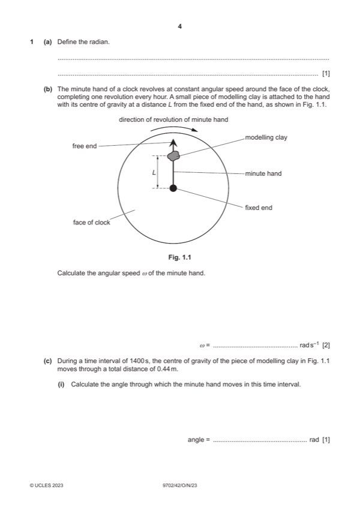

Question 1

Original paper page 4
Part 1(a) — solution
- [B1] Obtain/use: angle (subtended at centre of circle) when arc length = radius
Mark points
- [B1] Obtain/use: angle (subtended at centre of circle) when arc length = radius
Part 1(b) — solution
- [A1] Obtain/use: = 2 / (1.0 60 60)
Mark points
- [A1] Obtain/use: = 2 / (1.0 60 60)
Part 1(c)(i) — solution
- [A1] Obtain/use: angle = 1.7 10–3 1400
Mark points
- [A1] Obtain/use: angle = 1.7 10–3 1400
Part 1(c)(ii) — solution
- [A1] Obtain/use: L = 0.18 m
Mark points
- [A1] Obtain/use: L = 0.18 m
Part 1(c)(iii) — solution
- [A1] Obtain/use: = 0.18 (1.745 10–3)2
Mark points
- [A1] Obtain/use: = 0.18 (1.745 10–3)2
Part 1(d) — solution
- [B1] Obtain/use: centripetal acceleration is negligible compared with acceleration of free fall
- [B1] Obtain/use: resultant force is negligible compared with weight (of modelling clay) (so variation is negligible)
Mark points
- [B1] Obtain/use: centripetal acceleration is negligible compared with acceleration of free fall
- [B1] Obtain/use: resultant force is negligible compared with weight (of modelling clay) (so variation is negligible)